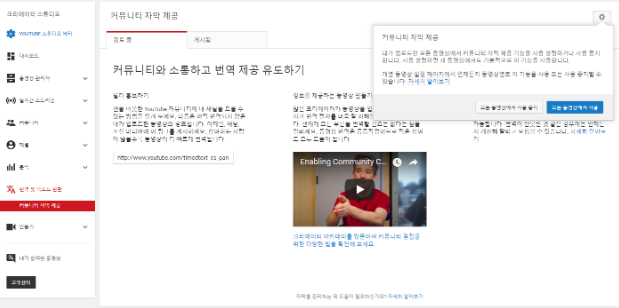
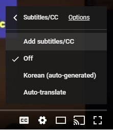

영상 자막 생성 작업 시작하기
- 문자통역 자막 생성 작업 참여자 여러분 환영합니다!
- 이 가이드라인은 TED Open Translation Project 중 TED Korean Translators의 가이드라인을 참고로 만들었습니다.
- 번역 및 자막 관련 참고 자료
자막 스크립트 초안 작업
문자통역 자막 생성 작업을 하기 위해서는 자막 스크립트를 편집해야 합니다. 해야하는 것들은 아래와 같습니다.
오타 등을 제외하고는 발화 내용을 편집하지 않도록 합니다.
- 파일 인코딩은 UTF-8로 통일합니다.
- 오탈자는 수정합니다.
- 초안은 더블 스페이스(double space), 즉 문장과 문장 사이에 줄바꿈을 넣어서 작성해주세요.
- 개발 용어는 한글 표기를 우선으로 하고 영문을 병기해주세요. 단, 한글 표기가 오히려 이해에 방해가 되는 경우에는 영문만 표기해주세요.
- 최초에는 파이썬(Python), 장고(Django), 딥러닝(Deep learning) 로 표기하고 두 번째부터는 한글로만 표기해주세요.
어싱크-> Async,어웨이트-> Await 로 표기해주세요.- 보다 자세한 표기에 대해서는 자막 용어집을 참조해주세요.
[준비위원회] YouTube 에서 커뮤니티 자막 참여 설정하기
- 유튜브 공식 도움말: 링크 내 영상에서는 커뮤니티 메뉴에서 설정이 가능했으나,
현재는 번역 및 텍스트 변환 이라는 별도의 메뉴가 생긴 것으로 보입니다.
- 파이콘 계정으로 유튜브에 로그인한 뒤 크리에이터 스튜디오(Creator Studio)로 갑니다.
- 번역 및 텍스트 변환 으로 이동해서 설정(톱니바퀴)을 누르면 커뮤니티 자막 제공 여부에 대한 설정을 할 수 있습니다. 이 설정을 모든 동영상에서 사용 으로 바꾸면 일반 사용자들이 자막을 만들어서 올릴 수 있게 됩니다. 새로운 영상을 올릴 때마다 이 설정을 다시 해주어야 합니다.

이 기능이 활성화 되면 유튜브 영상에서 설정(톱니바퀴)을 눌러서 Subtitles/CC(자막/CC) 메뉴로 들어가면 자막을 추가할 수 있게 됩니다.
